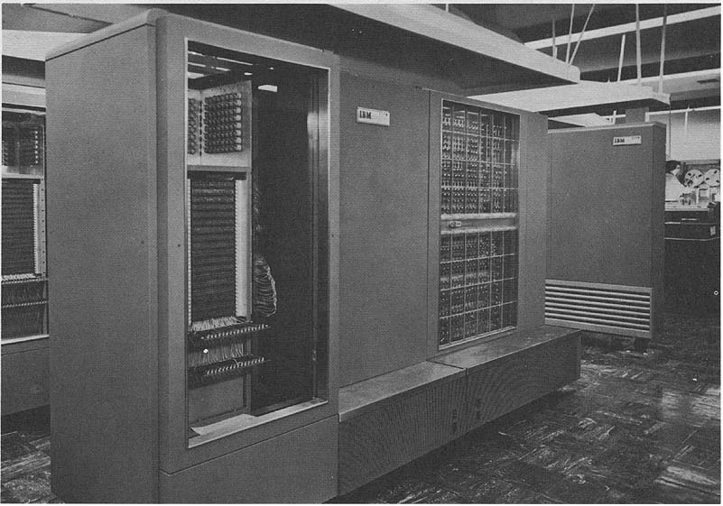

Prvi operacijski sustav
Prvi operacijski sustav nasao je u drugoj polovici 50-ih godina 20. stoljeća u vrijeme prve generacije koju karakteriziraju elektroničke cijevi i magnetski mediji, a to je predstavljalo znatan napredak u računarstvu jer je prije toga korištenje računala bilo izuzetno teško, posebice zbog ručnog programiranja prespajanjem kabela. Računala su bila ogromna i korisnici su obično vlastoručno morali prevoditi programe u strojni jezik.
U današnje vrijeme programerima je nezamislivo programirati samo kombinirajući binarne znamenke – 0 i 1. Posao je tada svakako olakšao prvi jezični prevoditelj FORTRAN kojeg razvija IBM te nedugo nakon toga nastaje prvi operacijski sustav tzv. GM-NAA I/O instaliran na IBM 704 računalu. Njegov zadatak bio je automatsko izvođenje novog programa nekon što je program koji se prethodno izvodio završio.
